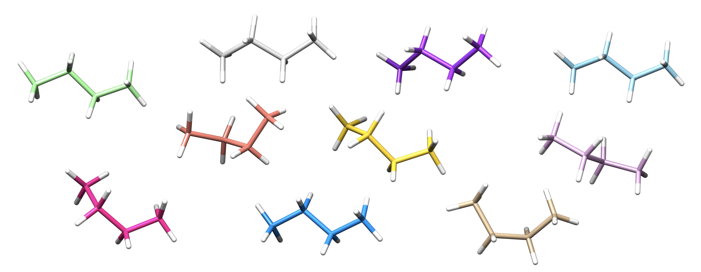

Conformer Generation¶
autodE generates conformers using two methods: (1) ETKDGv2 implemented in RDKit and (2) a randomize & relax (RR) algorithm.
Butane¶
To generate conformers of butane initialised from a SMILES string defaults to using ETKDGv2. The molecule’s conformers are a list of Conformer objects, a subclass of Species.
>>> from autode import Molecule
>>> butane = Molecule(name='butane', smiles='CCCC')
>>> butane.populate_conformers(n_confs=10)
>>> len(butane.conformers)
2
where although 10 conformers requested only two are generated. This because by default there is an RMSD threshold used to remove identical conformers. To adjust this threshold
>>> from autode import Config
>>> Config.rmsd_threshold = 0.01
>>> butane.populate_conformers(n_confs=10)
>>> len(butane.conformers)
8
For organic molecules ETKDGv2 is highly recommended while for metal complexes the RR algorithm is used by default. To use RR for butane
>>> butane.rdkit_conf_gen_is_fine = False
>>> butane.populate_conformers(n_confs=10)
>>> for conformer in butane.conformers:
... conformer.print_xyz_file()
Out (visualised)
Note
RMSD used by the RR algorithm applies to all atoms and does not account for symmetry (e.g. methyl rotation)
Metal Complex¶

Arbitrary distance constraints can be added in a RR conformer generation. For example, to generate conformers of Vaska’s complex while retaining the square planar geometry
import autode as ade
from autode.conformers import conf_gen, Conformer
# Initialise the complex from a .xyz file containing a square planar structure
vaskas = ade.Molecule('vaskas.xyz')
# Set up some distance constraints where the keys are the atom indexes and
# the value the distance in Å. Fixing the Cl-P, Cl-P and Cl-C(=O) distances
# enforces a square planar geometry
distance_constraints = {(1, 2): vaskas.distance(1, 2),
(1, 3): vaskas.distance(1, 3),
(1, 4): vaskas.distance(1, 4)}
# Generate 5 conformers
for n in range(5):
# Apply random displacements to each atom and minimise under a bonded +
# repulsive forcefield including the distance constraints
atoms = conf_gen.get_simanl_atoms(species=vaskas,
dist_consts=distance_constraints,
conf_n=n)
# Generate a conformer from these atoms then optimise with XTB
conformer = Conformer(name=f'vaskas_conf{n}', atoms=atoms)
conformer.optimise(method=ade.methods.XTB())
conformer.print_xyz_file()
Out (visualised)